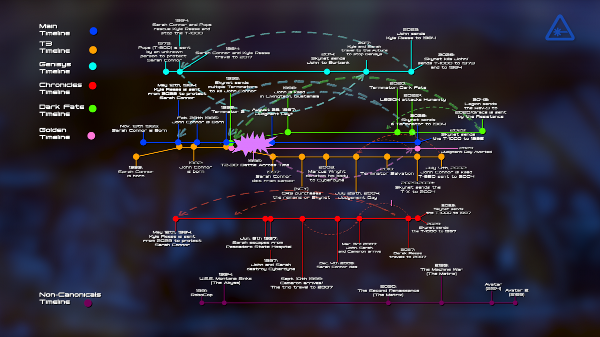

In 2029 the remaining humans on Earth, Resistance Fighters, under the command of John Connor, fights the war against Skynet, an artificial intelligence (AI), created by Miles Bennett Dyson and manufactured by Cyberdyne Systems. Skynet created many types of killing machines from airborn Hunter Killers, ground Hunter Killers Tanks and their most advanced killing machine being the Terminator. The Terminator was a specific type of infiltraiting machine made to infultraite resistance camps. The first Terminators was the T-60 model, it had a bulky humanoid figure and stood eight feet tall. Skynet then refined the Terminator machine and introduced the T-800. Standing at six feet tall and covered in human living tissue this machine model was a nightmare.
Timeline
Original Timeline - The Terminator
The original Terminator timeline is thought to be a looped time line. The Resistance stopped Skynet in 2029 and Skynet moments before its defeat sent one T-800 back in time to 1984. It's mission was to kill Sarah Connor and prevent John Connor from being born. The Resistance send a protector back to protect Sarah and fight the T-800; without any plasma weapons, the mission seemed like suicide but Kyle Reese valunnteered to do it. We then see these events unfold in the past during the first Terminator film.
Second Timeline - Terminator 2: Judgment Day
Following the first timeline we get to meet a reckless young John Connor and what seems like a deranged Sarah Connor. The events of the first timeline still happend but it turns out that Skynet had sent a second Terminator back in time, a T-1000. Future John decides to send a reprogrammed T-800 back to protect his younger self. A high risk but one worth taking
Other Timelines - Terminator 3: Rise of The Machines, Terminator Salvation, Terminator Genisys, Terminator Dark Fate, and Terminator TSCC
Of course when making movies about time travel theres always sequals and spinoffs. I decided to add an image of the original James Camerson timeline as well as what other directors have made over the years.
